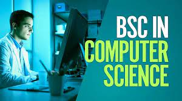
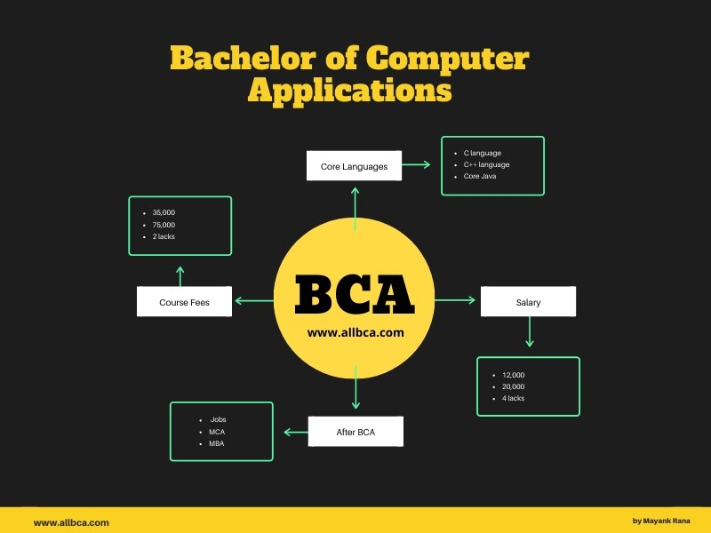

___________________________________________________________________________________________________________________
UNDER GRADUATION DEGREE IN .B.Sc.:-
___________________________________________________________________________________________________________________
1.B.Sc. Computer Science:-
BSc Computer Science (B.Sc CS) is one of the most popular programmes in the IT domain. This field has the potential to propel your career. It is a consistently growing field with a large variety of job opportunities both in India and abroad as the industry and demand grow. This degree can lead you to profiles like computer scientist or an information systems manager or a networking specialist whose job is to draw the technological roadmap for the organisation, ensure efficient management of the available computer facilities, handle smooth functioning of the local area and wide area networking, implement cybersecurity systems, look after software and hardware system upgrading, and manage system designing and technical analysis for the organisation.
___________________________________________________________________________________________________________________
2.B.Sc. IT:-
Like all other undergraduate programmes related to Information Technology, BSc (Bachelor of Science) in IT is basically about storing, processing, securing, and managing information. This degree is primarily focused on subjects such as software, databases, and networking. The BSc degree in IT is awarded for completing a programme of study in the field of software development, software testing, software engineering, web design, databases, programming, computer networking and computer systems. Graduates with an information technology background are able to perform technology tasks relating to the processing, storing, and communication of information between computers, mobile phones, and other electronic devices.
___________________________________________________________________________________________________________________
3.B.Sc. Chemistry

BSc Chemistry focuses on the study of various branches of chemistry such as Inorganic Chemistry, Organic Chemistry, Physical Chemistry and Analytical Chemistry along with elective subjects like Analytical methods in Chemistry, Polymer Chemistry and Industrial Chemicals and Environment.
___________________________________________________________________________________________________________________
4.B.Sc. Physics
BSc physics is a three-year undergraduate course that deals with the fundamentals of physics. BSc in Physics aims at teaching graduates essential topics such as quantum mechanics, Electromagnetism, optics, calculus semiconductors, waves, statistics, etc. ... After completing BSc Physics.
___________________________________________________________________________________________________________________
5.BSc Agriculture
BSc Agriculture is a 4-year undergraduate course that primarily focuses on research and practices in agricultural science, dealing with disciplines like Genetics and Plant Breeding, Agricultural Microbiology, Soil Science, Plant Pathology, etc.No, Mathematics is not a compulsory subject for BSC in Agriculture. You can leave maths but make sure you are good in physics , chemistry and biology. To get a seat in BSC Agriculture , you should be science student, with PCB or PCM.
___________________________________________________________________________________________________________________
6.BSc Biotechnology
B.Sc in Biotechnology is a three-year undergraduate course divided into six semesters that provides detailed knowledge of the bi-molecular and cellular activities and be informed about the different technologies to study them. It includes a wide spectrum of subjects like genetics, molecular biology and chemistry.
___________________________________________________________________________________________________________________
7.BSc Zoology
B.Sc. Zoology, also known as animal biology, is an amalgamation of understanding the animal world from outside as well as at the molecular level. BSc Botany is a 3-year undergraduate degree course. The course pertains to the study of plants and their physiology.
___________________________________________________________________________________________________________________
8.B.Sc. Radiology
B.Sc (Radiography & Imaging Technology - Lateral Entry) | Paramedical Sciences. Radiography is the science of taking images of the internal and hidden portions of the human body for diagnostic purpose Using Ultrasound, X-ray, CT scan, MRI, etc. comes under the realm of Radiography.
___________________________________________________________________________________________________________________
9.BSc Nursing
BSc in Nursing is a 4-year undergraduate course that focuses on providing detailed nursing to medical aspirants. Admission to BSc Nursing is provided through NEET which has been initiated by the Indian Government or several other university level entrance exams. Bsc Nursing is provided through the MNS Nursing exam to offer admission in the Indian Army. The average salary received post completing the course ranges from INR 2.5 - 8 LPA. A registered nurse having less than 1 year of experience usually begins their career with an average salary package of INR 2,33,151 per annum. After 4 years of service the average salary of nurses rises to INR 2,49,994 and nurses with 5 and more years of experience are paid a salary of 4,96,269 per annum. Candidates who have successfully completed their 10+2 exams from a recognised board and are from the Science stream with Physics, Chemistry and Biology as their compulsory subjects are eligible to apply.
___________________________________________________________________________________________________________________
OTHER COURSES AVAILABLE IN UG:-
___________________________________________________________________________________________________________________
10.BCA Bachelor in Computer Application
Bachelor in Computer Application (BCA) is an undergraduate degree course in computer applications. With the rapid growth of IT industry in India, the demand of computer professional is increasing day by day. This increasing growth of IT industry has created a lot of opportunities for the computer graduates.